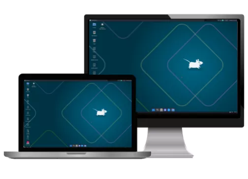

miOS Milky Mint
Algo clásico y para todos con el escritorio XFCE altamente optimizado.
Descargar desde DriveAccede a las versiones oficiales. Experimenta un sistema fluido, libre y con todo el rendimiento que necesitas.
Requisitos mínimos: 2GB de RAM. En reposo consume aproximadamente 650–690 MB; en equipos con 16GB puede usar entre 1.2 y 2.2 GB de RAM.

Algo clásico y para todos con el escritorio XFCE altamente optimizado.
Descargar desde DriveUna edición especial hecha para entusiastas, desarrolladores y creadores modernos.
Descargar desde DriveBasado en Debian, pensado para personalizar y rescatar equipos.
miOS no mantiene repositorios APT propios. Distribuimos imágenes ISO estables; los paquetes incluidos proceden de Debian y de fuentes comunitarias. Para instalar software recomendamos usar los repositorios oficiales de Debian, Flatpak o compilar desde la fuente.
Las imágenes están disponibles directamente desde Google Drive para descargar e instalar en tu equipo.